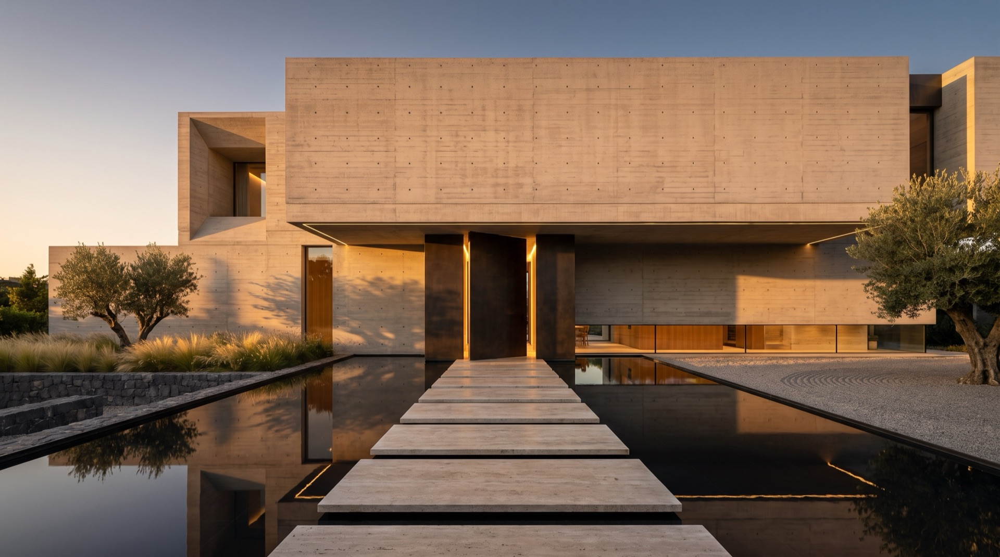
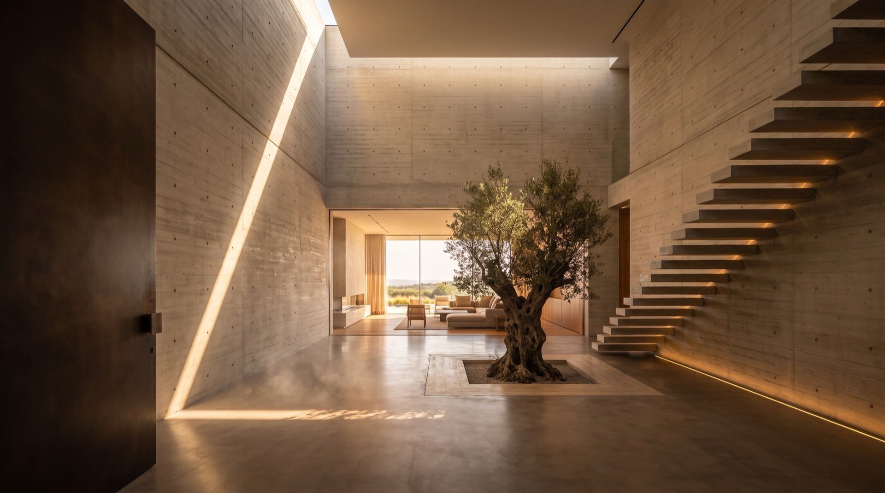

Cabinet d'architecture. Nous dessinons des maisons qui se ressentent avant de se voir.
Conception, lumière, architecture intérieure, sur-mesure, chantier et paysage : un seul studio, du premier trait à la remise des clés.
Découvrir le studioODORO
Le studio
Le studio
ODORO est un studio d'architecture et d'architecture intérieure. Nous menons peu de projets à la fois, avec une seule obsession : que la lumière, la matière et le silence fassent le travail. Des maisons pensées pour traverser un siècle, et pour être habitées chaque jour.
— Studio ODORO
Services
Un seul studio, du trait à la clé.
-
Conception architecturale
Étude du site, esquisses, avant-projet et permis de construire. Chaque maison part d'un lieu, d'une orientation et d'une manière de vivre.
-
Architecture intérieure
Plans, matières, mobilier et éclairage conçus dans le même geste que l'enveloppe du bâtiment.
-
Design sur mesure
Cuisines, bibliothèques, pièces uniques : dessinées au millimètre et réalisées avec des artisans d'exception.
-
Maîtrise d'œuvre
Consultation des entreprises, pilotage du chantier, suivi du budget et des délais jusqu'à la réception.

( II )Lumière & volumes
Puits de jour, failles, doubles hauteurs : nous sculptons le soleil pour qu'il habite l'espace à chaque heure, et dessinons l'éclairage dans le béton plutôt que de l'y accrocher.